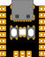

| Pin | Name | ADC | I2C | UART | PWM |
| 1 | VBUS |
|---|
| 2 | Ground |
|---|
| 3 | 3V3 |
|---|
| 4 | GP29 | ADC3 | I2C0 SCL | UART0 RX | PWM6 B |
|---|
| 5 | GP28 | ADC2 | I2C0 SDA | UART0 TX | PWM6 A |
|---|
| 6 | GP27 | ADC1 | I2C1 SCL | UART1 RTS | PWM5 B |
|---|
| 7 | GP26 | ADC0 | I2C1 SDA | UART1 CTS | PWM5 A |
|---|
| 8 | Ground |
|---|

| Pin | Name | SPI | I2C | UART | PWM |
| 16 | GP0 | SPI0 RX | I2C0 SDA | UART0 TX | PWM0 A |
|---|
| 15 | GP1 | SPI0 CSn | I2C0 SCL | UART0 RX | PWM0 B |
|---|
| 14 | GP2 | SPI0 SCK | I2C1 SDA | UART0 CTS | PWM1 A |
|---|
| 13 | GP3 | SPI0 TX | I2C1 SCL | UART0 RTS | PWM1 B |
|---|
| 12 | GP4 | SPI0 RX | I2C0 SDA | UART1 TX | PWM2 A |
|---|
| 11 | GP5 | SPI0 CSn | I2C0 SCL | UART1 RX | PWM2 B |
|---|
| 10 | GP6 | SPI0 SCK | I2C1 SDA | UART1 CTS | PWM3 A |
|---|
| 9 | GP7 | SPI0 TX | I2C1 SCL | UART1 RTS | PWM3 B |
|---|